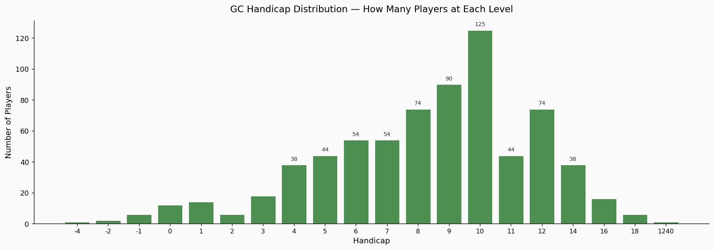
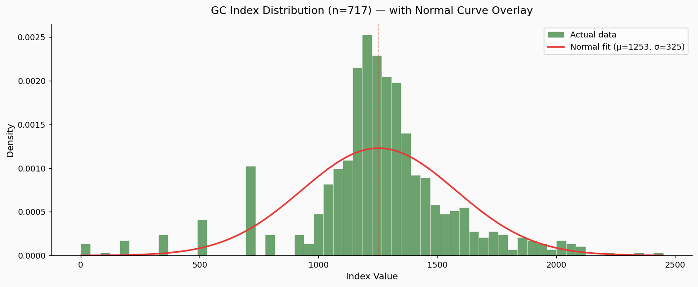
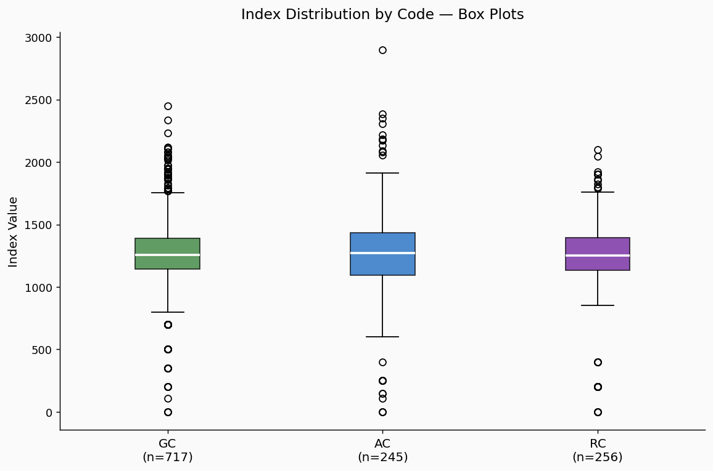
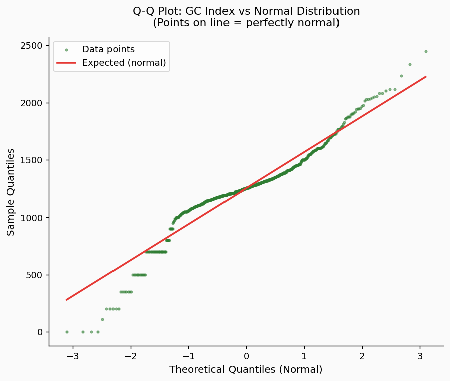
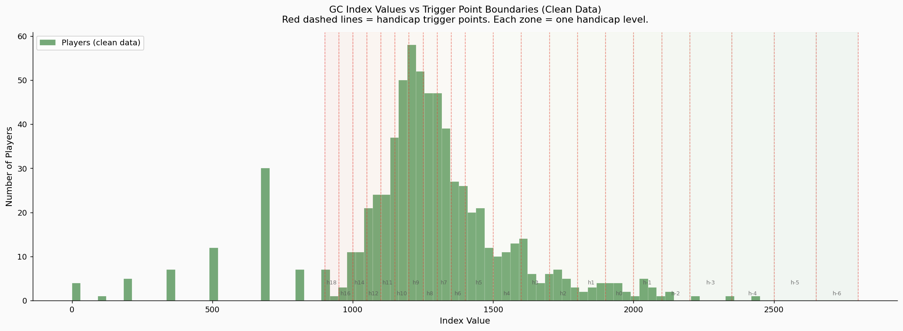
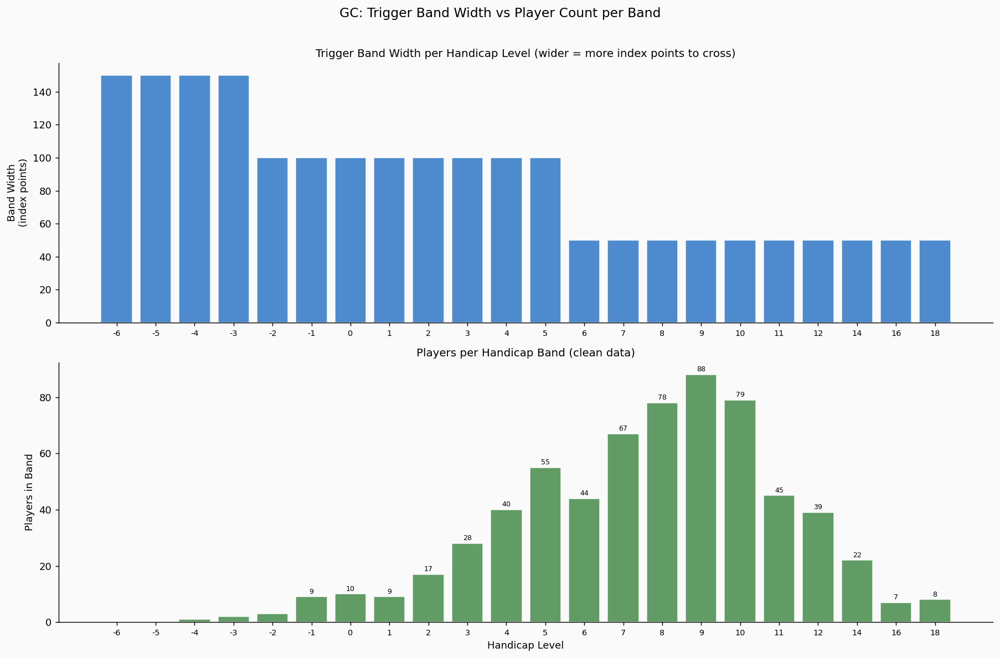
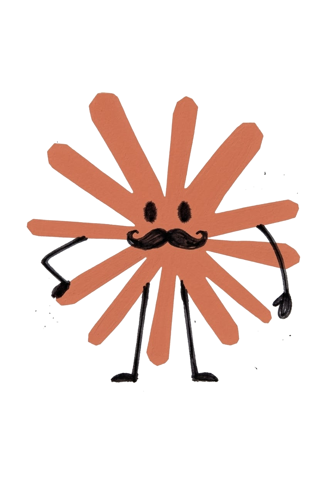

Abstract
I pulled 717 Golf Croquet handicap records from the CAQ database and tested whether the data matches the assumptions built into the Automatic Handicapping System. It does. The distribution of player indices follows a bell curve closely, and the trigger point spacing — narrow in the mid-range, wide at the top — is doing exactly what it was designed to do.
The most important finding is about perception, not mechanics. A handicap is a single number, but a player's performance on any given day is a range. A handicap 9 might play like a 5 or a 12. That variability is highest in the mid-range, where 90% of Queensland's players sit. In any tournament of reasonable size, results that look like "wrong handicaps" are statistically guaranteed. This is not a system failure. It is the nature of the sport at that skill level, and no adjustment to the system will change it. The answer is communication, not engineering.
The one structural change the data supports is to the divisions. The current three-division system places 55% of all players into Division 3. Rebalancing to four divisions — based on where the population actually clusters — produces roughly equal groups that each work as a proper tournament bracket.
*Data source: CAQ Handicap Records. 725 handicap records (mass-assigned round-number indices from the RevSport import) have been excluded from all analysis.
1. Data and Method
Handicap records were retrieved from the CAQ Handicap Database. After removing known placeholder values — bulk-assigned round-number indices that don't represent actual play — the working dataset contains:
| GC | AC | RC | |
|---|---|---|---|
| Players analysed | 717 | 245 | 256 |
| Mean index | 1253 | 1273 | 1204 |
| Median index | 1254 | 1270 | 1250 |
| Standard deviation | 325 | 406 | 404 |
GC (Golf Croquet) has the largest sample and is the focus of this analysis. AC and RC are included for comparison.
The AHS assigns each player a running index that moves after every qualifying game. In handicap play (extra stroke or advantage), the winner gains +10 and the loser loses −10. In level play, a sliding scale applies: the exchange ranges from 1 to 19 points depending on the handicap difference between the players — an upset win by the weaker player shifts more points than a win by the favourite. When the index crosses a trigger point, the player's handicap changes. The spacing between trigger points is not uniform — it is wider at the top of the scale (elite players) and narrower in the middle and lower ranges. A mechanism called hysteresis prevents the handicap from bouncing back and forth — once your handicap changes, you have to reach the next trigger point before it changes back, not just slip back across the one you just crossed.
2. The Shape of the Population
Figure 1 — Player counts by GC handicap level

Each bar represents one handicap level. The population is concentrated between handicap 6 and handicap 12. Handicap 10 is the single largest group. The left-hand side of the chart — stronger players at handicap 4 and below — thins out rapidly. There are very few elite players relative to the mid-range. This is a typical profile for a state-level player base: a large recreational middle with a small competitive tail.
Figure 2 — GC index distribution with normal curve

The green histogram shows the actual distribution of player index values. The red curve is a normal distribution (bell curve) fitted to the same mean and standard deviation.
The two sit close together. The data follows the bell curve shape through the core of the population. There is a slightly sharper peak in the middle and the left tail (stronger players) drops away marginally faster than a perfect bell curve would predict, but these are minor deviations. For a real-world dataset of 717 players, this is a strong fit. The system's underlying assumptions about how player abilities are distributed hold up well against the actual Queensland data.
Figure 3 — All three codes compared

Box plots comparing GC, AC, and RC. The horizontal line inside each box marks the median (the typical player). The box spans the middle 50% of the population. Whiskers extend to the broader range; dots beyond them are statistical outliers.
All three codes show a similar shape and spread. GC's larger sample size makes it the most statistically reliable, but AC and RC are consistent with the same underlying pattern.
Figure 4 — Quantile-quantile (Q-Q) plot

A Q-Q plot is a standard way to test whether data matches a theoretical distribution. Each dot represents a player. If the GC data were a perfect bell curve, every dot would fall on the red diagonal line.
The dots track the line closely through the middle of the range — roughly handicaps 5 through 14, where the vast majority of players sit. They curve away at the extremes: the top-left (elite players) and bottom-right (high-handicap players) deviate slightly. This reflects the sharper central peak and the mild asymmetry visible in Figure 2.
Formal normality tests (Shapiro-Wilk p < 0.001, Anderson-Darling statistic 18.8 vs critical value 0.75) reject the null hypothesis of perfect normality. However, with 717 observations, these tests are sensitive enough to detect deviations that are trivially small in practical terms. The visual evidence in Figures 2 and 4 is more informative: the data is close enough to normal that the system's mathematical assumptions are well-supported.
3. How the Trigger Points Interact with the Population
Figure 5 — Index distribution with trigger point boundaries

This is the key chart. The red dashed lines mark the trigger points — the index values where a player's handicap changes. The spaces between the lines are the handicap bands. The green bars show where players actually sit.
On the right-hand side of the chart (index 1100–1400, roughly handicap 6 to 12), the trigger lines are close together and the green bars are tall. Most of the population sits in narrow bands. On the left-hand side (index 1600 and above, handicap 4 and better), the trigger lines are far apart but there are almost no players.
This is the design working. The narrow bands in the mid-range ensure that developing players move through quickly. A player genuinely improving from handicap 10 to handicap 8 doesn't wait months for the system to catch up. The wide bands at the top demand more evidence before changing an elite player's handicap, which is appropriate given the higher stakes (tournament seeding, representative selection) and the fact that elite players play far more games and will still cross those wider boundaries in a reasonable timeframe.
Figure 6 — Band width and player density by handicap level

The top panel shows the width of each handicap band in index points (wider = harder to cross). The bottom panel shows the number of players in each band.
The system allocates its widest bands to the smallest groups and its narrowest bands to the largest. This looks inverted logic at first glance, but it reflects a deliberate design choice. Mid-range players need fast calibration. Elite players need stability. The data confirms that this trade-off is appropriate for Queensland's population.
4. Does the Model Match Reality?
The Automatic Handicapping System rests on three assumptions. Each can now be tested against the data.
Assumption 1: Skill differences matter more at the top. Trigger bands are 100–150 index points wide for elite players and 50 points wide in the mid-range. The reasoning is that a bisque (extra stroke) is more powerful in skilled hands, so finer discrimination is needed at that level. The data shows that only 11% of Queensland GC players sit at handicap 4 or better. The wide top-end bands serve a small, genuinely distinct group. Supported.
Assumption 2: Players are distributed across the range. The system defines 23 handicap levels from -6 to 20. The data does not fill these evenly — the bulk of the population sits between handicap 6 and 12, with a peak at handicap 10. However, the overall shape follows a bell curve closely enough that the system's mechanics remain well-calibrated. Largely supported. The main implication is for divisions, not for the handicapping mechanics themselves (see Section 6).
Assumption 3: The index behaves as a random walk. In handicap play, each game shifts the index by ±10 points. In level play, the shift ranges from 1 to 19 depending on the handicap gap — an upset by the weaker player moves the index more than a routine win by the favourite. Most club play is handicap, so the ±10 figure drives the bulk of index movement. In the 50-point mid-range bands, a player can cross a trigger after just 3 net wins or losses in handicap play. That is fast, and it is intentional. Players moving through the middle of the scale should not wait months for the system to recognise their improvement. At the top end, wider bands require a longer run of results — 8 to 15 net wins to cross a 100–150 point band. Elite players accumulate these games because they play more often. Supported.
5. The Volatility Question
A common concern is that mid-range handicaps change "too often." The mathematics confirm that they do change more frequently — but this is by design, not by accident.
| Handicap Range | Band Width | Approx. Games to Trigger Change |
|---|---|---|
| -6 to -2 (elite) | 150 points | ~56 games |
| -1 to 5 (strong) | 100 points | ~25 games |
| 6 to 20 (mid-range) | 50 points | ~6 games |
The relationship is not linear. The expected time to cross a boundary from the midpoint of a band scales with the square of the band width. A 50-point band is not twice as responsive as a 100-point band — it is four times as responsive.
This means a handicap 9 player will see their handicap change roughly every 6 games, while a handicap 0 player will change roughly every 25 games. This is appropriate: mid-range players are typically still developing, and the system should track their progress closely. Elite players are more settled, and the wider bands prevent short-term results from distorting a well-established handicap.
The fact that elite players play more games further compensates for their wider bands. A handicap 0 player who plays three times a week will still cross a 100-point band within a few months. The system reaches the right answer for both groups — it just gets there faster for the mid-range, which is what you want.
6. The Real Problem: A Handicap Is a Point, a Player Is a Range
This is the most important finding in this analysis, and it has nothing to do with trigger points or band widths.
A handicap is a single number. A player is not. A handicap 9 on any given day might play like a 5 or a 12. The handicap captures the average, but what spectators, opponents, and club captains actually observe is a single performance drawn from a spread around that average.
In a 16-game tournament, at least one result will look like a handicapping error. Someone will beat a player they "shouldn't" beat. Someone will lose a game they "should" have won. Every time this happens, people conclude the handicap is wrong. It is not wrong. It is a single sample from a distribution, and single samples are noisy.
Variability is highest where most players are
This compounds the problem. Elite players are more consistent — a handicap -2 might perform anywhere from -3 to -1 on a given day. That is a narrow range. Their handicap is a reliable predictor of what you will see in any individual game.
Mid-range players are much more variable. A handicap 9 might perform anywhere from 5 to 12. That is a wide range. The handicap is still correct on average, but individual games can look dramatically off.
Since 90% of Queensland's GC players sit in the mid-range, and mid-range players have the widest game-to-game variability:
- Most games will involve at least one "upset"
- Complaints about wrong handicaps will be constant
- The complaints will be concentrated in the divisions where most people play
This cannot be solved by the system
No adjustment to trigger points, band widths, hysteresis, or division boundaries will fix this. The variability is in the players, not in the mechanics. A theoretically perfect handicapping system with infinite data and zero lag would still produce results that look wrong in individual games, because the system tracks averages and spectators observe instances.
The only effective response is communication — helping players and club captains understand that a handicap 9 beating a handicap 5 is not evidence of a problem. It is what variability looks like on any given Tuesday.
7. Division Structure
Current GC Divisions
| Division | Handicap Range | Players | Share |
|---|---|---|---|
| Division 1 | -6 to 4 | ~93 | 13% |
| Division 2 | 5 to 8 | ~226 | 32% |
| Division 3 | 9 and above | ~394 | 55% |
More than half of all Queensland GC players are in a single division. Division 3 spans eleven handicap levels. A handicap 9 and a handicap 18 are in the same bracket despite having nothing competitively in common. The skill gap within Division 3 is wider than the gap between Division 1 and Division 2.
Population percentiles
| Percentile | Index | Approx. Handicap |
|---|---|---|
| Top 10% | 1600+ | 4 or better |
| Top 25% | 1388+ | 6 or better |
| Median | 1255 | 9 |
| Bottom 25% | below 1146 | 11 or worse |
| Bottom 10% | below 968 | 16 or worse |
The median player sits at handicap 9 — right on the current Division 2/3 boundary. The busiest part of the population is split across two divisions at the most awkward possible point.
Recommended: Four divisions matched to the population
| Division | Range | Players | Share |
|---|---|---|---|
| Division 1 | -6 to 5 | ~137 | 19% |
| Division 2 | 6 to 8 | ~182 | 26% |
| Division 3 | 9 to 10 | ~215 | 30% |
| Division 4 | 11 and above | ~179 | 25% |
Every division is large enough for a proper tournament bracket. No division absorbs more than 30% of the field. The boundaries follow the natural shape of the population rather than historical convention.
The change from the current structure is small: the Division 1/2 boundary shifts up by one handicap level (from 5 to 6), and a new Division 3/4 split is added at handicap 11. The two most populated levels (9 and 10, totalling 215 players) are kept together in Division 3 where they will produce competitive matches.
For smaller clubs that cannot fill four brackets, adjacent divisions merge naturally: Divisions 1+2 as an "Open" bracket and Divisions 3+4 as a "Social" bracket — a split that matches how most clubs already think about their membership.
Two alternatives were considered:
Alternative A keeps the current boundaries and adds a split at handicap 12. This leaves Division 3 at 47% (still too large) and creates a Division 4 of only 61 players (too small for most draws).
Alternative C keeps three divisions but shifts both boundaries up by one level. This improves the placement of the peak (handicap 9 and 10 move into Division 2) but still concentrates 56% into a single bracket.
8. Recommendations
1. Communicate why handicaps look wrong. The single most valuable thing CAQ can produce for club captains is a one-page guide explaining that a handicap is an average, not a guarantee. Upsets are not evidence of bad handicapping — they are the natural consequence of game-to-game variability, which is highest exactly where most players sit. Frame the message positively: the system is working, and what you're seeing is normal.
2. Rebalance to four GC divisions to have even numbers. Div 1 (≤5), Div 2 (6–8), Div 3 (9–10), Div 4 (11+). Based on the actual population distribution. Each bracket is viable for tournament play. One existing boundary moves by one level; one new boundary is added.
9. Conclusion
The Queensland GC handicap data follows a bell curve. The trigger point spacing is doing what it was designed to do. The system calibrates mid-range players quickly and holds elite players steady, and the fact that elite players play more games compensates naturally for their wider bands. The mechanical design of the AHS is sound for this population.
The persistent perception that handicaps are "wrong" is not a system problem. It is a statistical inevitability. A handicap captures an average; spectators observe individual games. The variability between the two is largest in the mid-range where most players sit. No system redesign will eliminate this. Education will help.
The one structural change the data supports is moving from three GC divisions to four, with boundaries set by the population distribution.
About the Author

This paper is an example of what I do in practice: pulling live data from CAQ's handicap database, running the statistics, and turning the results into something a club captain can read over a cup of tea and understand.
More at croquetclaude.com
Statistical tools: Python 3.12, SciPy, matplotlib, seaborn. Source code: the analysis script.